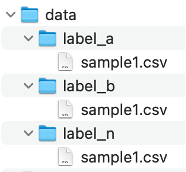

PyTorch datasets and dataloaders
PyTorch datasets and dataloaders#
The PyTorch dataset and dataloader classes make it easy for us to use batching etc. Their tutorial is a good place to start understanding how they work and should be read alongside this tutorial here in case things are unclear.
You can use them by importing the DataLoader and Dataset packages from torch.utils.data.
import os
from torch.utils.data import DataLoader, Dataset, Subset
from delphi.utils.tools import ToTensor
Unfortunately, I cannot provide Dataset classes for basically any usecase unless everyone follows the conventions that we follow in the Biomedical Imaging Group. However, I do propose that you employ a data tree like the one shown below:
{kind=link}
This helps us in quickly identifying the label of a given class just by looking up the directory name. For some use cases, for example with tabular data (such as .csv or .xls datatypes) the labels usually are assigned in one column of the data. Then a directory structure like it is shown above is unecessary.
Let us now see what we need to implement for our custom dataset classes. The code block below depicts a template of the functions you absolutely need to implement when designing your own dataset class. To better understand what each of the functions do read the comments I provide:
# the general setup of a Dataset class
class MyDataset(Dataset):
def __init__(self):
r"""
This is the so-called constructor of any class. As the name suggests
this function is used to initialize important variables that the dataset
needs to know. This construct function is automatically called when
you instantiate a new class, e.g., when you call data = MyDataset()
This function can also have arguments. I suggest that the constructor
should have at least these parameters:
Args:
path_to_data (str): this could be either a path to mulitple files
or the file itself.
device (torch.device): which device would you like to use
(default=torch.device("cpu"))
shuffle_labels (bool): this is a nice addition in case one wants
to create a null performance measure (default: False)
transform: in case one wants to transform the data (i.e., normalize,
rotate, scale, etc.)
"""
pass
def __len__(self):
r"""
returns the length of the dataset
this is done by taking the len() of the dataset
return len(self.data)
"""
pass
def __getitem__(self, idx):
r"""
This is the function in which we actually load the data and the labels.
In here it is common to set up the data such that you return a tuple of
the data and the labels as their own variables. In this function we also
move the data and labels to the supplied device and transform them according
to the supplied transformation functions in self.transform (if they exist).
Args:
idx (int): indicates with datum and label to return.
Returns:
tuple(data, label)
"""
pass
Ok, now that we have an intuition of what a dataset class looks like let us look at some implementations that I provide with my code.
The first implementation we look at is a TabularDataset class. This dataset can take a .csv or an excel compatible (e.g., .xls, .xlsx, .odf, .ods among others) file-type as input.
Note
Do not be discouraged by the extra code that is in this implementation. This is to prevent erronous inputs etc. and is meant to guide the user. In most cases this is not necessary because you will commonly write code suited to your use case. I tried to be as general as possible.
# let us create a simple dataset that takes .csv or maybe other tabular files as input
from torch.utils.data import Dataset
import os
import torch
import pandas as pd
import numpy as np
# we call this class TabularDataset since that is what it is
class TabularDataset(Dataset):
r"""
Class to take care of tabular files such as .csv, .xls, etc.
"""
# we can support different types of tabular dataformats.
# for now we support the file types given in the variables below.
POSSIBLE_EXCEL_EXTENSIONS = [".xls", ".xlsx", ".xlsm", ".xlsb", ".odf", ".ods", ".odt"]
# in this implementation it is required that at one column has one of the following
# descriptions. If it does not exist in the data raise an error.
EXPECTED_LABEL_COLUMN_NAMES = ["class", "label", "target"]
####### REQUIRED CLASS FUNCTIONS ########
# now we come to the so-called constructor or the initializer function
# I personally like having the option to add transformation functions and
# the option to shuffle the labels. This allows me to quickly create
# a null distribution/performance estimate
def __init__(
self,
path_to_file,
device=torch.device("cpu"),
shuffle_labels=False,
transform=None
):
r"""
The constructor of the TabularDataset class.
Args:
path_to_file (str): the path to the file. Supports .csv, .xls file-types at the moment
device (torch.device): the device on which to store the data
shuffle_labels (bool): Default=False; permutes the class labels
transform: can be a list of functions to transform the data
"""
super(TabularDataset, self).__init__()
self.path_to_file = path_to_file
self.shuffle_labels = shuffle_labels
self.transform = transform
self.device = device
# we can check what the file extension of the supplied file is.
# this informs us which function to use to read the file.
filename, file_extension = os.path.splitext(self.path_to_file)
# read the file 'path_to_file' with pandas reading functions
if file_extension == '.csv':
self.data = pd.read_csv(self.path_to_file)
elif file_extension in self.POSSIBLE_EXCEL_EXTENSIONS:
self.data = pd.read_excel(self.path_to_file)
else:
raise ValueError(f"{file_extension} is not \'.csv\' or one of {self.POSSIBLE_EXCEL_EXTENSIONS}")
# check if a ["class", "label", "target"] column is found in the data
# if not, raise an error
self.label_column = self._check_for_label_column()
def __len__(self):
r"""
returns the length, i.e. the number of samples, of the dataset
"""
return len(self.data)
def __getitem__(self, idx):
r"""
get the (batch) sample and label. A sample is one row of the dataset.
A column represents one feature.
Returns:
tuple(sample, label)
"""
# select all the data except for the label column
data = self.data.loc[:, self.data.columns != self.label_column].to_numpy()
# extract only the requested row
sample = data[idx, :]
# assign the corresponding label to the row
label = self.data[self.label_column].to_numpy()[idx]
# In case you provide a set of transformations execute them here
if self.transform:
label = self.transform(label).to(self.device)
sample = self.transform(sample).float().to(self.device)
return (sample, label)
####### CUSTOM / HELPER FUNCTIONS ########
def _check_for_label_column(self):
r"""
make sure the dataset has a column indicating the label, class, or target
Returns:
label_column: the column name of the target/class/label
"""
# make sure all column values are lowercase
columns = [column_name.lower() for column_name in self.data.columns.to_list()]
# check if there is a column with one of these descriptions: ["class", "label", "target"]
# if not, raise an error and indicate to the user that they need a label column with
# the description in EXPECTED_LABEL_COLUMN_NAMES
label_column = [col_name for col_name in self.EXPECTED_LABEL_COLUMN_NAMES if columns.count(col_name) > 0]
if not label_column:
raise ValueError(f"Did not find a column indicating the {self.EXPECTED_LABEL_COLUMN_NAMES}")
return label_column[0]
Right, so what was all this for? The goal of these datasets is to have a general setup such that we can exploit the power of the PyTorch DataLoader class.
The DataLoader class can take care of a number of things for us.
It is a
generatorwhich means we can easily iterate over all datapoints in our datasetwe can set how many samples per batch we want
we can shuffle the dataset
we can distribute the data/batches to multiple workers, meaning we can exploit parallel processing
etc…
I created a dummy_ds.csv file to demonstrate how this works.
# We now load the data stored within the dummy_ds.csv file
data = TabularDataset('dummy_ds.csv')
If we wanted to, we could now access each sample by using the __getitem__ function and supply a single index as shown below. On the other hand if we wanted to get a batch, we could also supply a list of indices to the function.
# get a single sample with its label
sample, label = data.__getitem__(10)
print("Sample data: ", sample, "\nLabel: ", label)
# get a batch of 4 samples with their respective labels
sample, label = data.__getitem__([2, 4, 0, 10])
print("\nBatched Sample data: ", sample, "\nBatched Labels: ", label)
Sample data: [ 0.34810022 1.10560502 -0.12978938 1.68536215 -0.01200362 2.12168985
-0.53985801 -0.45726264 -0.57580312 0.96060891 -0.46569884 0.94239489
1.63580326 0.39518677 -0.49509537 -0.4432387 1.01888881 -0.68882815
0.05426619 0.03923666]
Label: 0
Batched Sample data: [[-1.25744765 0.99514179 0.76161641 1.27121089 -0.1042117 -0.42573839
-0.66558342 0.88723275 0.1171774 -0.87590716 1.39366192 0.75422015
-1.61686852 0.22071409 -0.89460092 0.63354489 1.32051097 -0.23074283
0.99393088 0.35410665]
[ 0.96989177 0.28143284 -0.35807049 1.37952275 0.07642126 0.26766915
-0.86966526 0.64460088 -0.33722325 -0.35106016 1.05169211 0.79733317
-1.98811722 -0.52962523 0.71545117 0.21856745 1.52769592 0.35716858
-0.29743858 2.74152369]
[ 0.62496938 -0.55165461 0.45645439 1.03613864 1.09365959 -2.26105163
1.64820326 1.95124017 -0.03287803 -2.18782345 -0.59050062 1.41066745
-0.93724356 0.01958021 -0.68527278 1.25714178 0.05581559 0.85175372
-1.33724658 -0.26182352]
[ 0.34810022 1.10560502 -0.12978938 1.68536215 -0.01200362 2.12168985
-0.53985801 -0.45726264 -0.57580312 0.96060891 -0.46569884 0.94239489
1.63580326 0.39518677 -0.49509537 -0.4432387 1.01888881 -0.68882815
0.05426619 0.03923666]]
Batched Labels: [1 0 0 0]
The thing is, we are lazy. We do not want to bother doing this ourselves, so we use the DataLoader class I mentioned above. This time, we will use a loop to see how it works:
# Let us define a dataloader that generates us a sample, label tuple
# with 4 samples. We also want the indices to be shuffled.
dl_tabular = DataLoader(data, batch_size=4, shuffle=True)
# in case you are interested in how many batches you dataloader contains
# simple use len(DataLoader)
print(f"Number of batches: {len(dl_tabular)}\n")
# now print the samples and labels:
for i, (samples, labels) in enumerate(dl_tabular):
print("Batched Sample data: ", samples, "\nBatched Labels: ", labels, "\n")
Number of batches: 10
Batched Sample data: tensor([[ 1.3053, 0.6896, -0.9933, -1.3382, -0.1248, 0.2594, -0.4363, 1.2170,
-0.6823, 0.2864, -0.3140, 0.5833, 1.1667, 0.7672, -0.7090, -0.5304,
0.8625, -0.2286, -0.3526, 0.3228],
[-0.9908, -0.8721, 0.9936, -3.0987, -0.8415, -0.9533, -1.1682, 1.2055,
0.1890, 0.6690, -1.0472, -0.6849, -1.1405, -0.3104, 0.2768, 1.4617,
1.9639, 1.8423, 1.1516, 0.0090],
[-0.2652, -0.4826, 0.3204, 0.7555, -0.6018, 0.1626, 0.2298, 1.1416,
1.0210, 1.1791, -0.6822, -0.4467, -0.7880, -0.5294, -0.6582, 0.6906,
0.6552, 1.6260, -0.5466, 0.4498],
[-0.8591, -1.7704, -0.1745, -0.9754, 0.5658, 0.1900, -0.7620, -0.7420,
1.3585, 0.1110, -0.3965, 0.1332, 1.8672, -0.0978, -1.0952, 0.0330,
1.8324, 0.0407, -1.0200, -0.5890]], dtype=torch.float64)
Batched Labels: tensor([0, 1, 1, 0])
Batched Sample data: tensor([[-6.0014e-01, -4.1300e-01, 8.7484e-01, -8.6698e-01, 7.7486e-01,
-8.1261e-01, -7.6997e-01, 8.6132e-01, -3.7165e-01, 9.9648e-01,
-6.2527e-01, -5.8556e-01, -1.7908e+00, -1.5097e-04, 6.3818e-01,
-1.0593e+00, 5.0057e-01, -1.8029e+00, 8.0016e-01, -4.2365e-01],
[-7.8310e-01, -1.9353e+00, -3.0866e-01, -9.5128e-01, 4.2892e-01,
-9.4304e-01, -1.5155e+00, 1.6398e+00, -2.9344e-01, -1.4539e+00,
-2.4491e-02, -1.1225e+00, 8.6758e-01, 3.2106e-01, 1.7590e-01,
7.5307e-01, -6.9567e-02, 6.9430e-02, -7.6156e-01, -1.7373e-01],
[-4.9992e-01, -6.5446e-01, 4.1520e-01, -3.5915e-01, 8.2801e-01,
-4.4666e-01, 3.1175e-01, 4.8431e-01, 7.1117e-01, 1.5553e-01,
5.4927e-01, -9.2318e-01, -1.0651e+00, -1.9194e+00, 9.8783e-01,
-2.5888e-01, -6.9137e-01, 5.5545e-01, 1.8541e-01, 2.2337e+00],
[ 1.1794e+00, 1.3873e+00, 7.5490e-01, -1.1792e+00, -1.1329e+00,
4.5520e-01, -2.4376e-01, 2.7918e-01, -1.3356e-01, -7.0181e-01,
-3.1318e-01, -1.2734e+00, 6.2176e-01, 1.4014e-01, -1.2727e+00,
-7.3054e-01, 2.2915e+00, -7.0385e-01, -8.1971e-01, 8.0685e-01]],
dtype=torch.float64)
Batched Labels: tensor([1, 1, 0, 1])
Batched Sample data: tensor([[-0.8122, -2.2237, 1.8629, 0.3543, -0.8057, 0.1588, 1.5893, 0.2089,
-0.3596, 0.6183, -0.9610, 0.3633, -1.0089, 0.9683, 0.4022, -0.5878,
1.6318, -1.1241, 0.3019, 0.2625],
[ 0.1291, -1.7352, 0.7939, -1.7178, 0.6857, -0.9208, -0.3240, -1.6038,
0.1892, -1.4704, -0.3705, -0.1547, 0.9224, 0.0558, 0.6375, 0.5315,
1.4825, 0.5101, -1.3424, 1.1783],
[ 2.0860, -0.8513, -0.3500, -1.0896, -1.0691, -0.3002, -0.9221, -0.3040,
-0.0644, 0.2230, 0.2455, 1.3858, 0.5839, -0.5200, 1.1862, -1.4604,
1.7749, -0.0087, 0.4553, -0.4010],
[ 0.1517, -0.5585, 0.4997, -0.5046, -2.0453, 0.8505, -0.4742, -1.4410,
0.0437, 2.2300, -2.2281, 0.6371, -1.5842, -1.7969, 1.1460, 1.5890,
-0.7755, -1.5575, 0.6434, -1.4952]], dtype=torch.float64)
Batched Labels: tensor([1, 0, 1, 0])
Batched Sample data: tensor([[-0.1633, 0.1996, 0.2825, -0.5784, -0.9747, 1.4508, 1.0442, -0.1510,
-0.2763, 0.0249, -1.1026, -0.2910, -1.2027, 0.3704, -0.0967, 0.5378,
-0.2882, 1.1478, 0.3078, -0.5213],
[ 0.2015, -0.4957, 1.0547, -0.9296, -1.4528, 0.2649, 0.4844, 1.4317,
-1.0968, 1.5127, -0.2845, -0.5777, 0.1554, 1.9389, 0.5942, -2.0412,
-0.6742, -1.2906, -0.9375, -1.6318],
[ 0.9699, 0.2814, -0.3581, 1.3795, 0.0764, 0.2677, -0.8697, 0.6446,
-0.3372, -0.3511, 1.0517, 0.7973, -1.9881, -0.5296, 0.7155, 0.2186,
1.5277, 0.3572, -0.2974, 2.7415],
[-0.4301, 0.1053, 0.1697, -0.6605, -0.0667, 0.7893, 1.6357, 2.3572,
0.5476, -0.1736, -0.6049, -0.7453, 2.3920, 0.1429, -0.7036, -0.2870,
-1.4799, -3.0451, 0.3138, 1.3036]], dtype=torch.float64)
Batched Labels: tensor([0, 1, 0, 0])
Batched Sample data: tensor([[-1.2574, 0.9951, 0.7616, 1.2712, -0.1042, -0.4257, -0.6656, 0.8872,
0.1172, -0.8759, 1.3937, 0.7542, -1.6169, 0.2207, -0.8946, 0.6335,
1.3205, -0.2307, 0.9939, 0.3541],
[ 0.7559, -0.7811, 0.1698, 0.3536, 0.1759, -0.7211, -1.2796, 0.3797,
-0.5412, -0.1760, 1.1669, 1.0208, -1.2552, -1.0304, 0.2261, -1.9716,
1.1315, -0.3068, -0.3009, -0.2583],
[ 0.3481, 1.1056, -0.1298, 1.6854, -0.0120, 2.1217, -0.5399, -0.4573,
-0.5758, 0.9606, -0.4657, 0.9424, 1.6358, 0.3952, -0.4951, -0.4432,
1.0189, -0.6888, 0.0543, 0.0392],
[ 0.6250, -0.5517, 0.4565, 1.0361, 1.0937, -2.2611, 1.6482, 1.9512,
-0.0329, -2.1878, -0.5905, 1.4107, -0.9372, 0.0196, -0.6853, 1.2571,
0.0558, 0.8518, -1.3372, -0.2618]], dtype=torch.float64)
Batched Labels: tensor([1, 1, 0, 0])
Batched Sample data: tensor([[ 1.1297, -0.3252, -0.0982, -0.2811, -1.7882, -1.0044, 0.7228, -0.0208,
0.9322, -1.6791, 0.5749, 0.3895, 1.0842, -0.2791, -0.1995, 0.5252,
-2.1583, 1.0223, 1.6743, 1.0277],
[ 1.6549, -0.7298, -1.9167, -1.3042, -0.4139, 1.8389, 0.9299, 0.3686,
0.7063, 0.7347, 0.3651, 1.3826, 0.5087, 0.9438, -0.2235, -0.6371,
-0.2318, 0.6223, 0.3998, -0.0225],
[ 0.2328, 1.6465, 1.4599, 1.9211, 0.5543, 0.8886, -1.5124, 0.9497,
0.0959, 2.7158, -0.9761, 0.5828, -0.0260, -0.2237, -0.1546, 1.9794,
0.5556, 0.0892, -0.1464, 0.1042],
[ 0.2867, 1.4241, -0.5073, -0.1450, -0.2410, 0.2202, 0.3917, -0.0588,
0.5082, -0.4576, -0.3319, 0.0553, 0.0073, 0.8213, -1.1285, -0.4089,
0.4639, -0.1480, -0.6640, 0.8275]], dtype=torch.float64)
Batched Labels: tensor([1, 1, 0, 0])
Batched Sample data: tensor([[-0.3102, -1.0169, -0.9181, 0.4909, 0.3858, 0.1634, 0.4832, 0.0442,
-1.7266, -0.7838, 0.9721, -0.4349, 1.4985, 0.6380, -1.3660, 0.1064,
-0.6543, 0.5634, -1.3375, -1.5044],
[-0.7012, 0.8924, -0.7332, -0.0322, -0.9196, -0.5151, -1.8946, -2.2615,
0.0102, 1.5509, -1.8712, 1.0518, 1.6778, 0.5439, -1.7758, 1.0482,
0.9174, 0.1530, 0.0075, 0.3518],
[ 0.2644, 0.0792, 0.1407, 0.4541, -0.2090, 0.7907, -0.3052, -0.1008,
0.5944, -0.2572, 1.2908, -0.4554, 0.3059, -1.8553, 0.4927, -1.5877,
0.4509, 0.9855, 0.2597, -0.0996],
[-1.1484, 0.4494, -1.1598, -1.6401, 0.1082, 0.1808, 3.6303, -1.0099,
-0.0947, -1.0156, 0.9630, 0.6655, -0.5889, -0.1997, -1.2763, -0.5315,
-1.9184, -0.7530, -0.3119, 0.7248]], dtype=torch.float64)
Batched Labels: tensor([0, 1, 1, 1])
Batched Sample data: tensor([[-0.1719, 0.1697, -1.2872, -0.4851, 1.7710, 0.6490, -0.8042, -1.1109,
0.2088, -1.0708, -1.8083, 1.4519, -0.1265, 0.5613, -0.4717, -0.7820,
0.1122, 1.1825, -0.6076, -0.9970],
[-0.4042, 0.4184, -0.0790, -1.6120, 1.3580, -1.2296, -0.3859, -0.3540,
-1.4232, 0.3166, 1.7758, 0.0884, -1.7006, -0.4336, 1.5888, 0.2989,
1.1238, -0.8017, -0.1060, 1.5185],
[ 0.8227, 0.3741, -0.4357, 0.8138, 0.2730, 1.5023, 0.8300, 0.8439,
0.2203, 0.2955, 0.7180, 0.4096, -1.0425, -0.3806, -2.0533, -0.6359,
0.7146, -0.4867, 0.5592, -0.3763],
[ 0.0406, 0.0860, 0.3847, 0.6512, 0.0224, -1.0537, 0.6947, -2.1390,
0.0196, 0.1502, 1.0783, -0.2382, -0.7576, -0.0995, -0.4650, 0.4702,
0.5466, 0.8979, 0.4292, 0.5415]], dtype=torch.float64)
Batched Labels: tensor([1, 1, 0, 0])
Batched Sample data: tensor([[-1.1529e+00, 1.3286e-01, -6.7672e-01, 6.6385e-01, 4.9562e-02,
-9.4446e-01, 3.7703e-02, 1.4352e+00, -5.9585e-02, -8.9572e-01,
1.6930e+00, 1.2646e+00, 1.5611e+00, -1.4570e+00, -1.0804e+00,
-5.7529e-01, -9.1273e-02, -1.6218e+00, -1.5475e+00, 4.3440e-01],
[ 3.7356e-01, -5.3909e-01, 4.7391e-01, 2.3527e+00, 6.9724e-01,
3.5875e-01, 1.5851e+00, 1.7224e-01, 8.2186e-03, -1.5335e+00,
-1.4860e+00, 1.8460e+00, -8.7445e-03, 6.4874e-01, 6.6622e-01,
1.9224e+00, -2.6458e-01, 5.9561e-01, -2.4767e-01, 9.5394e-01],
[-1.3296e-01, -1.8377e+00, -4.5377e-01, -7.0391e-01, 1.0572e+00,
2.9513e-01, 7.2276e-01, 1.6196e-01, 1.9225e-01, -1.4306e+00,
3.7392e-01, 1.1288e+00, 1.0969e+00, 2.6004e-01, -1.6272e+00,
-8.7144e-01, -6.5671e-01, 1.4668e+00, -8.0264e-02, 1.1069e+00],
[-4.5431e-01, -6.5284e-01, 5.4846e-01, -5.8191e-01, -8.0843e-01,
1.1568e+00, 1.6788e+00, 3.6142e-01, -1.0716e+00, 6.8956e-01,
-8.3510e-03, -5.7715e-01, 6.7672e-01, 1.6095e+00, 1.4942e+00,
-2.6420e-01, 1.4861e+00, -1.2386e-01, -1.0083e+00, 1.0547e-03]],
dtype=torch.float64)
Batched Labels: tensor([0, 0, 0, 0])
Batched Sample data: tensor([[-0.1545, -1.1284, 0.2441, 0.7381, -1.0618, 1.0538, -0.6163, -1.1974,
0.4761, 1.4900, -0.6174, 1.2542, -0.9428, 1.1081, -2.1357, 1.8701,
0.2824, 0.4345, -0.3151, 0.4735],
[-0.6855, 1.2703, -0.1051, 0.2555, -1.3376, 0.4905, -0.2704, 0.3152,
-1.0613, -0.2843, 0.4255, 0.9754, -1.2756, -1.2510, -0.0551, 0.3331,
-1.7431, 0.7307, 0.5624, 1.2947],
[ 1.2251, 2.1953, -0.8511, 0.5282, 1.5062, -0.7324, 0.2272, 0.4934,
-1.2742, 0.8370, -0.2388, 1.6977, -1.2315, 0.6933, 1.9371, 1.6288,
-0.7499, 0.8814, -0.7778, -1.0388],
[-2.5682, -0.1440, -1.0137, 1.0937, 0.0970, -0.9851, 0.6543, -1.7555,
-1.0792, -0.5446, 0.3545, 0.6707, -1.6439, -0.4259, 0.4939, 0.3112,
0.6313, 2.1230, 0.4188, -1.2571]], dtype=torch.float64)
Batched Labels: tensor([1, 0, 0, 0])
Note
Another cool thing these DataLoaders have is that you can provide a generator seed which helps in reproducibility.
Now since this course is actually targeted towards Neuroimagers I want to show you the code for the NiftiDataset. Simply click on the button below to expand the code block. In case you want to import some datasets from my code you can find them in _core.utils.datasets.
As an exercise you could try to make sense out of the code and see if you understand what it does. :)
import os # we are commonly working with paths, so importing os is helpful
import numpy as np # numpy for some numeric operations and better array structures
import nibabel as nib # nibabel is for loading nifti files
import glob
from torch.utils.data import Dataset # we need to inherit from the PyTorch Dataset class
class NiftiDataset(Dataset):
"""
NiftiLoader has torch functionality to rapidly generate and load new
batches for training and testing.
"""
def __init__(
self,
data_dir,
labels,
n,
device,
dims=3,
shuffle_labels=False,
transform=None
):
"""
Constructor for the NiftiDataset class
:param data_dir: path to the data
:param labels: list of class names (directories within data_dir)
:param n: the number of samples to load. If "0" take every example in directory.
:param device: the device to use (cpu|gpu)
:param dims: 3 to keep the dimension, 1 to flatten into vector
:param shuffle_labels: in case one wants to train a null-model enable label shuffling. Using this for training
should lead to a network that provides information if labels would not matter. I.e.,
it should perform only at chance level.
:param transform: A composition of transformation functions that should be applied to the data.
"""
self.device = device
self.classes = labels
self.dims = dims
self.transform = transform
# get the file paths and labels
for iLabel in range(len(labels)):
# look for all files in alphanumerical order in the label directory
file_names = sorted(glob.glob(os.path.join(data_dir, labels[iLabel], "*.nii.gz")))
# select only the requested number of files if n > 0
n_files = len(file_names[:n]) if n != 0 else len(file_names)
if iLabel == 0:
self.data = np.array(file_names[:n_files])
self.labels = np.array(np.repeat(labels[iLabel], n_files))
else:
self.data = np.append(self.data, file_names[:n_files])
self.labels = np.append(self.labels, np.repeat(labels[iLabel], n_files))
if shuffle_labels:
self.labels = np.random.permutation(self.labels)
def __len__(self):
return len(self.labels)
def __getitem__(self, idx: int):
"""
load a (batch) sample. This is usually done automatically by the
Pytorch DataLoader class.
:param idx: the index of the sample to load
:return: tuple(volume, label)
"""
# make sure that there are no NaNs in the data.
volume = np.nan_to_num(nib.load(self.data[idx]).get_fdata())
volume[np.isnan(volume)] = 0 # this one is in here because I am paranoid
# sometimes nibabel retains the temporal dimension. (x, y, z, t)
# we do not want that so we get rid of it.
if len(volume.shape) > 3:
volume = volume.squeeze()
volume = np.expand_dims(volume, 0) if self.dims == 3 else volume.flatten() # add the channel dimension
label = np.squeeze(np.where(np.array(self.labels[idx]) == np.array(self.classes)))
# In case you provide a set of transformations execute them here
if self.transform:
label = self.transform(label).to(self.device)
volume = self.transform(volume).float().to(self.device)
else:
label = label.to(self.device)
volume = volume.to(self.device)
return volume, label
That is pretty much it with the Datasets and DataLoaders. You will see many references to them in later chapters since they are one of the building blocks of PyTorch functionality. Make sure you understand what they do and how to build one for yourself.